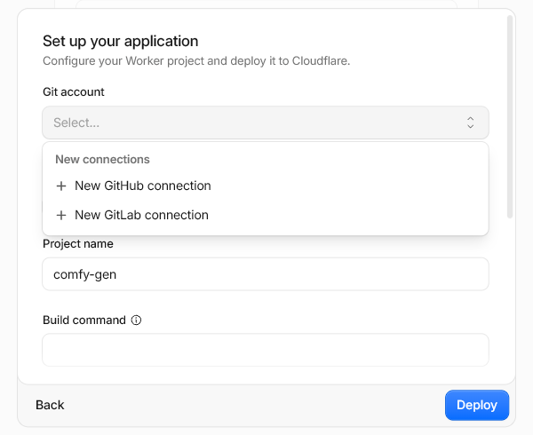
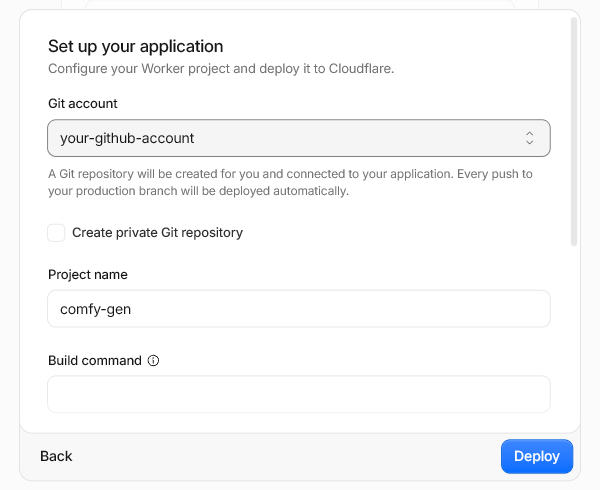
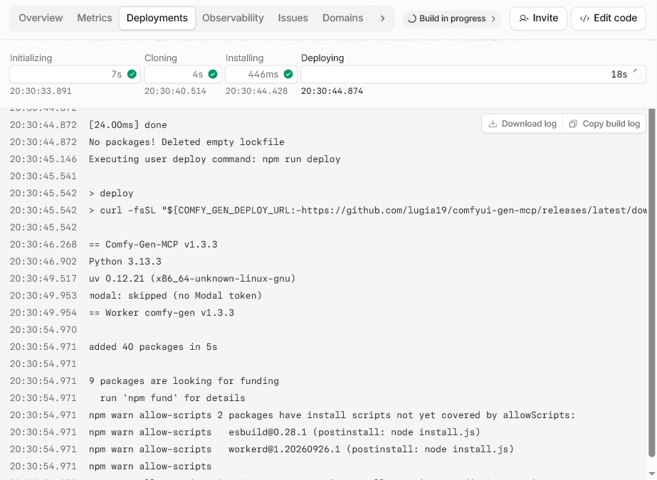
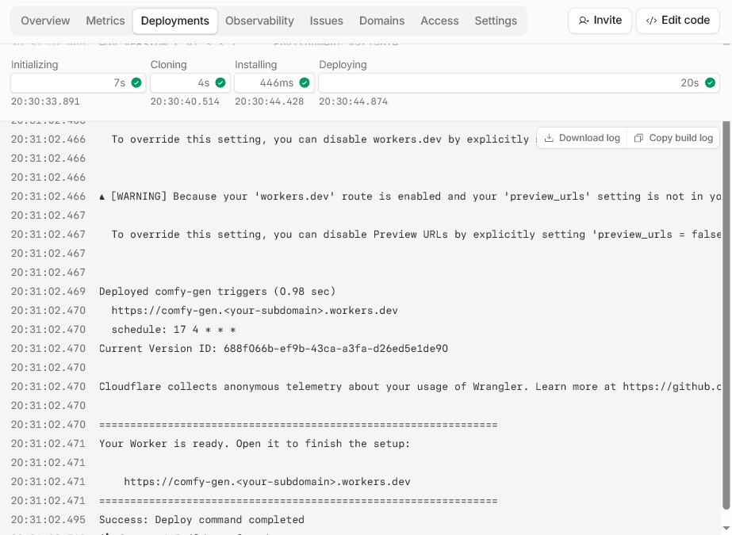
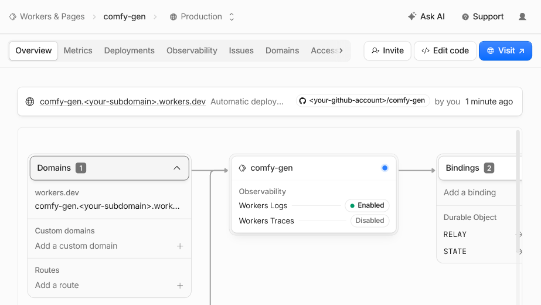

Comfy-Gen-MCP
Image generation and editing for Claude, on a ComfyUI you own.
For claude.ai, on the web and your phone
A free Cloudflare Worker gives Claude an image tool. The images are made either in the cloud, on Modal (it only runs, and only bills, while it generates), or on your own PC with a GPU, through a small agent that connects out to the Worker: no port to open, no tunnel. Or both: your PC when it is on, Modal when it is off.
Only using Claude Desktop, on the PC with the GPU? You don't need any of this: skip to the Claude Desktop extension.
You need:
- A GitHub account. The deploy keeps a small copy of the setup in your GitHub, which is how your Worker updates itself.
- A Cloudflare account (the free plan is enough).
- A claude.ai plan that can add custom connectors.
- For the cloud: a Modal account with a card on file (new accounts get $30 of free compute a month). For your PC: an NVIDIA GPU (AMD on Linux), or an Apple silicon Mac.
Tip: Cloudflare and Modal both let you sign up with your GitHub account (the GitHub button on their sign-up pages). Make the GitHub account first and use it for both: one login instead of three.
Steps:
- Click the button. Cloudflare opens in a new tab with a form: pick your GitHub account under
Git account (connecting it the first time, see below), keep the project name
comfy-genand everything else as it is, and click Deploy. - Wait for the first deploy, under a minute, then open your Worker. This page shows how to find its address once you have clicked the button.
- Your Worker's page takes you through the rest, one step at a time: log in, choose where the images are made, set that up, and connect Claude.
Connecting GitHub to Cloudflare (the first time only)
- On Cloudflare's deploy page, open the Git account list and choose New GitHub connection.
- GitHub asks you to install the Cloudflare app on your account: click Install.
- Back on the deploy page, pick your GitHub account in the Git account list. The repository it
creates is named after the project,
comfy-gen.


Already clicked it? Show how to find your Worker.
Updates install themselves: the Worker checks for a new release daily and redeploys, and the agent on your PC updates itself too.
Next: find your Worker
- In the Cloudflare tab, the build runs for under a minute. Its log is on the page.
- When it finishes, the end of the log says Your Worker is ready with your Worker's address,
https://comfy-gen.<your-subdomain>.workers.dev. Open it. - Lost the tab? In the Cloudflare dashboard, open Workers & Pages: the address is under comfy-gen in the list. Or open comfy-gen and click Visit at the top right.



Your Worker's page takes it from there.
Claude Desktop only
The Claude Desktop extension installs and runs ComfyUI on your PC, with no accounts. Open the file to install it in Claude Desktop, then open its settings page from the tray icon to pick your GPU and install ComfyUI.
Source and issues: github.com/lugia19/comfyui-gen-mcp